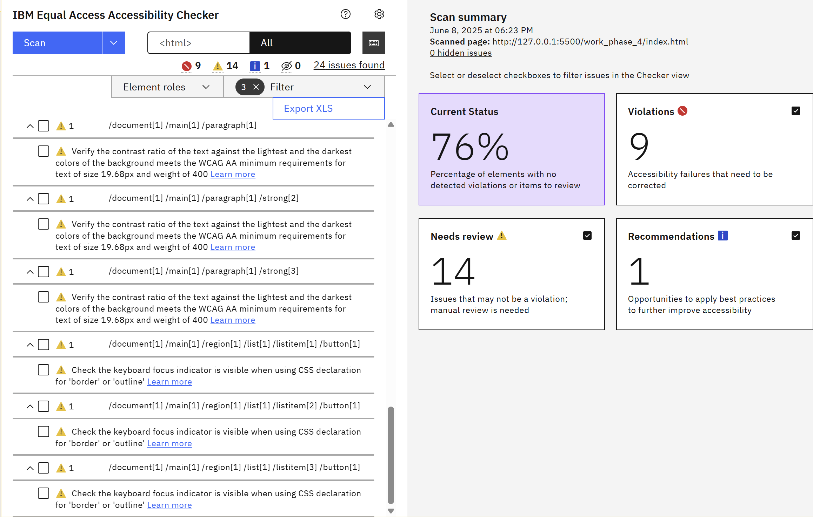
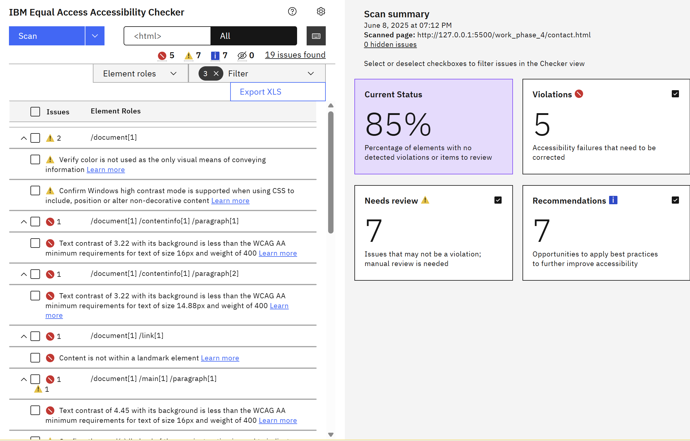

Implementation Rationale
A detailed explanation of the key design and technical
decisions behind the CCI Community Hub website, aligned with
the course criteria and ethical standards.
Overview
The CCI Community Hub was developed with a strong
emphasis on accessibility, user experience, and
responsible integration of dynamic content. Every
decision—design, technical, or ethical—was made to
closely align with course requirements, industry
standards, and the genuine needs of a diverse community.
GitHub Repository:
https://github.com/adrienyang666/deco7140_development
Key Design & Implementation Decisions
Page Structure and Navigation:
-
Six core pages, logical grouping and
navigation.
-
Modular nav for consistency and
accessibility.
Accessibility and Inclusivity:
-
Clear labels, alt text, WCAG 2.2 compliant.
- Semantic HTML for screen readers.
Visual Design and Consistency:
-
Standardized modular CSS for a unified look.
- Responsive via flexbox & media queries.
Dynamic Content and API Integration:
-
Contact page API (POST, custom headers).
- User feedback for submission/errors.
- Directory filtering via JavaScript.
Code Quality and Structure:
- Modular JS for clarity and performance.
- GitHub version control, clear commits.
Ethics and Cultural Sensitivity:
- Diverse, positive imagery and content.
-
GenAI tools used responsibly with human
review.
Alignment with Course Criteria
-
All design and implementation choices directly
address the grading rubric.
-
Dynamic content is delivered via secure and
compliant API use.
-
Accessibility, ethical design, and user needs are
prioritized throughout.
-
Code structure and site organization reflect best
web practices.
In summary, the CCI Community Hub demonstrates a
professional approach to web development, balancing
technical excellence, inclusivity, accessibility, and
ethical responsibility.
Accessibility Audit & Reflection


Reflection:
-
Most pages scored above 85% on the Lighthouse
accessibility audit, but a few issues were identified
and addressed during development.
-
All interactive elements are now accessible and operable
by keyboard, though initially some custom components
needed improved focus styling.
-
ARIA labels and alt text were reviewed—some ARIA misuse
(such as aria-label on non-landmark elements) was fixed
based on audit feedback.
-
Several text and background color pairs needed contrast
adjustments to fully meet WCAG 2.2 AA standards.
-
Several text and background color pairs needed contrast
adjustments to fully meet WCAG 2.2 AA standards.